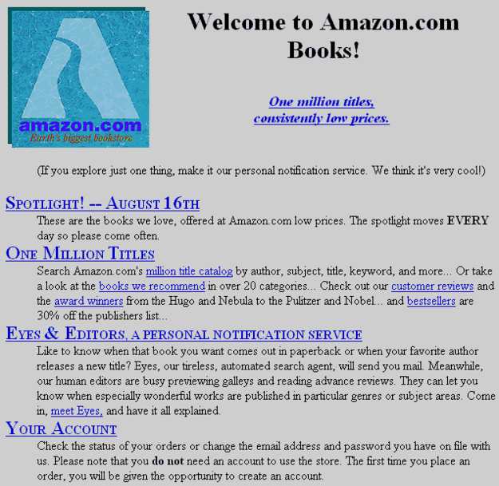

In this increasingly complex technical age, the ability to write code is becoming evermore significant. Traditional methods of programming involve sitting at a computer learning the individual functions of HTML, CSS, Javascript, etc., and piecing them together to generate a coherent web page. Tangible HTML is a new approach to web development education for beginners. Centered around form and content, the project proposes an educational methodology that looks beyond the computer to focus on programmatic basics in a real space.
Tangible HTML, likening itself with toy building blocks, is built in a tangible space. To encourage an imaginative approach, users are presented with content parsed from familiar childhood storybooks. By limiting the creative scope available to users, Tangible HTML asks users to focus both on the HTML and narrative they are constructing. As users assemble their webpage, they learn the basics of language and the structure that composes all HTML documents. By abstracting the educational experience, Tangible HTML hopes to inspire future generations to further explore the web development process.
HTML stands for Hyper Text Markup Language. While most consider it a coding language, it's really only a markup language, meaning its only for formatting and styling content.
HTML works by surrounding content with semantic tags that help display your content on screen. The end result is that looks like a website out of the 1990's. The styling is taken care of by CSS, but that's a whole different ball game and I have taken care of it for you.
Every*1 HTML element needs and opening <> and closing </>tag. This ensures the browser knows exaclty what to format and how. Forgetting an opening tag will not format anything and leaving off the closing tag will ensure all content after the opening is formatted the same. Modern browsers are smart enough to figure out your mistakes sometime, but for best practices and to ensure your site worls across all systems, don't forget the tags.
Green represent your head tags. Thes are the blocks that signify the title of your page and other important text. Any text inside the head tags is usually bigger and sometimes bolder than other text on screen.
White blocks are to be placed in the black squares on the sandbox. These are your content block. They only contain the content you wish to see on sceen and no html value.
Blue blocks are your semantic containers. They are used to help seperate your code into sections and avoid confusing jumbles of code. They are sematic for their use in SEO, Search Engine Optimization. When Goole uses it's computer bots to scan the web, they read the semantic tags to help understand what is on your page. to give you a better score with their search engine.
Red blocks represent your text decoration tags. These are special little tags that only alter the way text is shown on screen. In this very text I have used several including i, em, and code . These tags make text italic, bold, and formatted as code to help draw attention to them.
Tangible HTML Is going to walk you through the frist steps in creating a HTML document for viewing on the web. To start look at the 'sandbox' in the middle of the table. The surface has been marked out with the places to put down blocks of code.
The blocks are color coded to help guide you through the process. You can read in the other column about the meaning of the blocks.